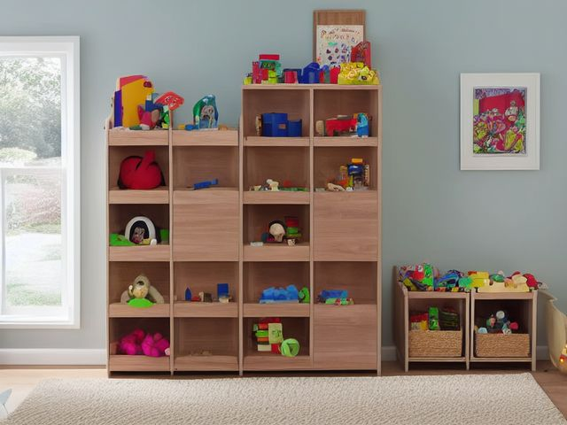

Kids Bedroom micro zone
The Toy Storage Zone
Holds the bedroom toys so a small child can put them away without asking anyone.
One session: 60-90 min. most of it in Sort, because everything has to come out onto the floor before it can go back

What done looks like
Six open bins, none higher than the child's shoulder, each with a photo of its contents taped to the front face. Blocks in one, vehicles in one, small figures in one. Enough clear carpet to lie down on. One rotation box on the wardrobe top shelf, out of reach and dated.
Check these before you start
- Poison, choke, or strangleSmall parts and loose button batteries reachable by a younger sibling. Anything that fits through a toilet roll tube goes up high.
- FallToys left loose on the carpet between the bins and the door, which is exactly where feet go at night.
The six passes, in order
Work them in this order. Sorting after you have arranged things means arranging things you were about to remove.
Sort
Decide what stays. Everything else leaves the zone now.
Tip every bin onto the floor and sort into families first, blocks with blocks, figures with figures. Broken toys, orphan puzzle pieces and party bag plastic go out during the sort, never into a decide later pile that becomes a seventh bin.
Straighten
Give what stays a home, placed where the hand actually reaches.
One open bin per family and no lids anywhere. A lid is an extra step, and an extra step is the reason a five year old drops the dinosaur on the carpet instead. Heaviest bin on the bottom, the daily favourites at hand height.
Shine
Clean it, and use the cleaning to inspect what you cannot see when it is full.
Run the hard plastic through a sink of warm soapy water and dry it on a towel. Vacuum the skirting corners where small parts migrate, and check the bin bottoms for splits before you refill them.
Safety
Make the zone safe for everybody who uses it, including the shortest person.
Anything smaller than a toilet roll tube is a choking hazard for a younger sibling and belongs in a bin they cannot reach. Then check every battery hatch: button batteries are the serious one, so bin any toy whose battery cover has lost its screw.
Standardize
Write down the best way you know today, so it survives you forgetting.
Photo label on the front face of every bin, never on a lid, at the child's eye level rather than yours. A picture of six blocks works long before reading does.
Sustain
Attach the reset to something that already happens, so it keeps itself.
Pickup happens when the bedtime story gets chosen, not after it. The story is the thing worth clearing the carpet for.
The set that gets tipped out and abandoned
Every kids' room has one: the forty small figures, or the enormous block set, that gets emptied across the carpet and walked away from before anyone has built anything. You have not thrown it out because it was expensive, or because the person who gave it asks after it. Stop deciding that on feeling and run a test instead. Half of it goes into the rotation box on the wardrobe top shelf for six weeks. When it comes back down, watch what they do with it that same afternoon. If they go straight for it and build something, it has earned a bin at floor level. If it gets tipped and abandoned again, that is your answer and the whole set moves on. Rotation, not volume, is what makes play go deep and pickup go short.
Cleaning it properly
Shine here is mostly the bins and the small parts that escape them. Work from the wardrobe top down to the skirting corners, wash the hard toys properly, and check each empty bin before you refill it. The skirting corners are where the lost pieces gather.
Inspect as you clean. Cleaning is the only time you see the zone empty, so use it.
- A bin bottom starting to split or a corner going brittle, found when you turn the empty bin over, which will spill the load next time it is lifted.
- A cracked toy with a sharp broken edge, or flaking paint on a wooden toy, spotted as you wash and dry each piece.
- A mildew smell or a dark bloom inside a bin, which means something went back in damp.
- A carpet gripper or a lifting seam at the skirting, felt as the vacuum snags on it.
The standard that keeps it fixed
Every toy family has one open, photo labelled bin at child height, and the carpet is clear enough to lie down on when the light goes off.
Reset trigger. Floor cleared while the bedtime story is being chosen, every night.
Next in this room
- The Bed and Sleep Zone, the zone before this one
- The Study Desk, the zone after this one
- All 6 micro zones in the Kids Bedroom
Related reading
- What is 6S?
- This zone's safety pass, in full
- Is one spot in this zone always the one you skip?
- Why this zone gets messy again
- Decluttering vs. organizing
- Before you buy storage for this zone
- Still does not fit, even after the honest count?
- Does something in this zone actually get used somewhere else?
- Stuck on one item in this zone?
- Written the standard, but nobody else follows it?
- Does everyone in the house agree what "done" looks like here?
- Does more than one person use this zone?
- Found a duplicate of something in this zone?
- Why the standard above names one home per category
- Is the everyday item in this zone actually the easy one to reach?
- Not sure whether to keep something in this zone?
- Does this zone keep running out of something?
- Started this zone and stalled partway through?
When you want it off the screen
Carry The Toy Storage Zone into the room
The method above is complete and free. The Whole House Print Pack puts The Toy Storage Zone and the other 113 micro zones on 684 printable cards, so the steps you just read are not stuck behind a phone screen while your hands are full.
The Print Pack, 19 dollarsJust this zone, 4 dollarsOr draw a card free
The Toy Storage Zone on its own is 4 dollars for 6 cards. All 114 micro zones is 19 dollars for 684. The whole house is the better buy; the single zone is here so you can take only what you are working on.
If The Toy Storage Zone keeps fighting back, the real problem usually sits somewhere else in the room. A one hour virtual consult is 250 dollars: we find the function, the friction and the root cause together, and you keep a written standard for the space. See what a consult covers.